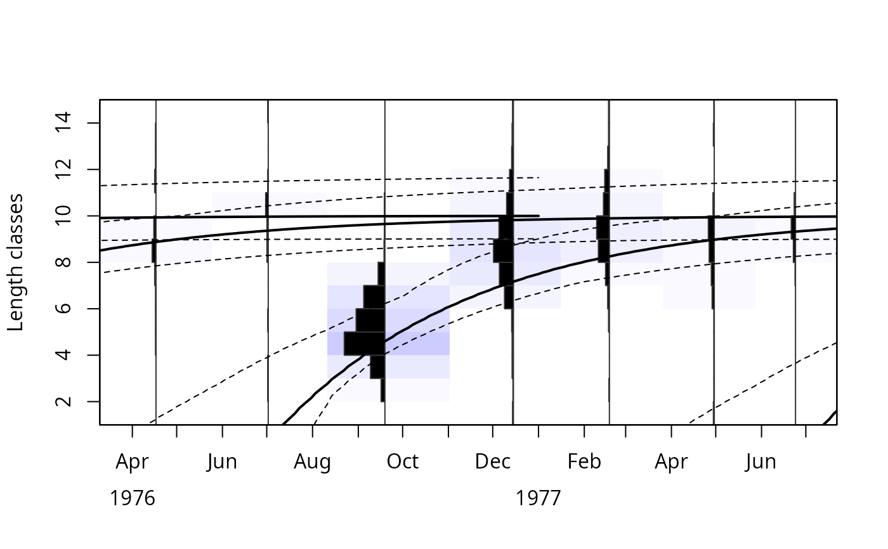
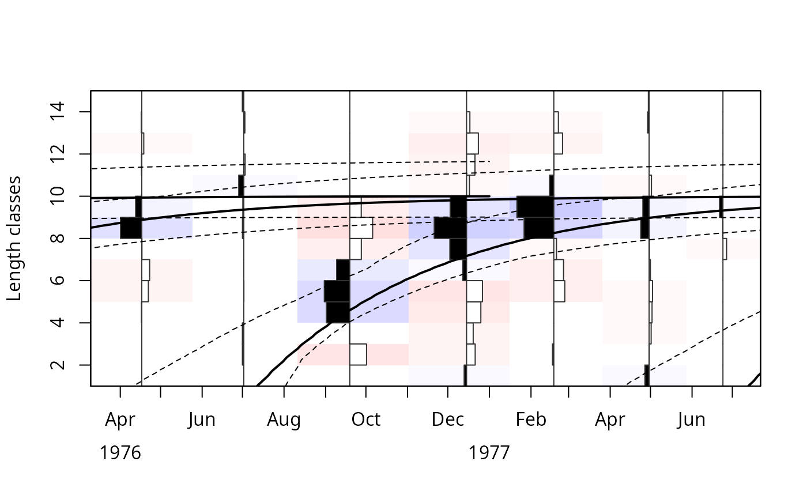
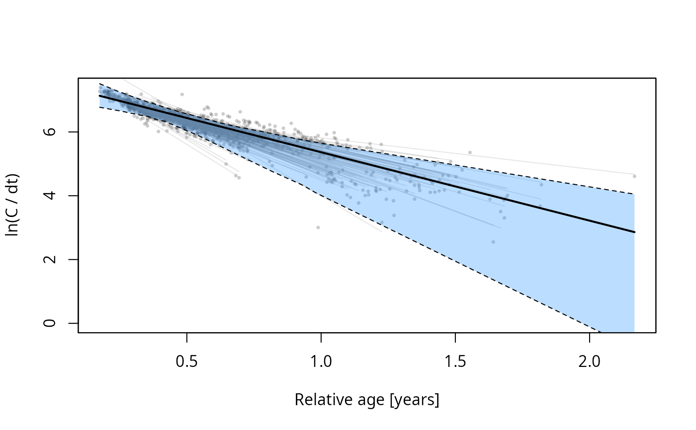
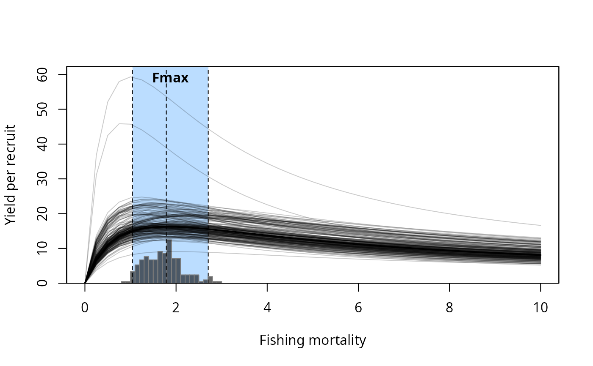

Plots results of the bootstrapped assessment:
`pType = "lfq"`: the length-frequency data together with the growth curves with maximum density and their confidence interval (ELEFAN_GA_boot, ELEFAN_SA_boot),
`pType = "cc"`: the catch curves of the resamples (catchCurve with `boot`),
`pType = "ypr"`: the yield per recruit curves of the resamples with a reference point (predict_mod with `boot`).
Usage
plotBoot(
lfq,
boot,
pType = "lfq",
display = c("CI", "bootRaw"),
best = "maxDen",
pRef = "Fmax",
Fname = "catch",
agemax = NULL,
rel = FALSE,
hist.sc = 0.5,
hist.col = c("white", "black", "orange", "darkgreen"),
image.col = NULL,
region.col = NULL,
zlim = NULL,
zlimtype = "balanced",
date.axis = "traditional",
date.at = seq(as.Date("1500-01-01"), as.Date("2500-01-01"), by = "months"),
date.format = "'%y-%b",
xlab = NULL,
ylab = NULL,
CI = 95,
ci.col = 1,
ci.lty = 2,
ci.lwd = 1,
maxd.col = 1,
maxd.lty = 1,
maxd.lwd = 2,
...
)Arguments
- lfq
a length frequency object of the class `lfq` (only used for `pType = "lfq"`)
- boot
an object of class `lfqBoot`
- pType
type of plot: `"lfq"` (default), `"cc"` or `"ypr"`
- display
for `pType = "cc"`: `"CI"` (regression line and confidence band), `"bootRaw"` (regression lines of all resamples) or both (Default: `c("CI", "bootRaw")`)
- best
for `pType = "cc"`: regression line with the Z and intercept with maximum density (`"maxDen"`, default) or the medians (`"median"`)
- pRef
for `pType = "ypr"`: reference point to display, one of `"Fmax"` (default), `"F01"`, `"F05"` or `"F04"`
- Fname
name of the element of `lfq` to plot, either `"catch"` (default) or `"rcounts"` (restructured data, see lfqRestructure)
- agemax
numeric. Maximum age of the growth curves. By default, derived from the bootstrapped estimates of K.
- rel
logical; should relative frequencies (per sample) be displayed? (Default: `FALSE`)
- hist.sc
numeric; scaling of the histograms (Default: 0.5)
- hist.col
colours of the histograms for negative and positive values
- image.col
colours of the background image
- region.col
optional; colour of the plot region (replaces the background image)
- zlim
limits of the background image
- zlimtype
either `"balanced"` (default) or `"range"`
- date.axis
either `"traditional"` (default) or `"modern"`
- date.at
dates for the date axis
- date.format
format of the dates for `date.axis = "modern"`
- xlab
label for x-axis (default depends on `pType`)
- ylab
label for y-axis (default depends on `pType`)
- CI
numeric; confidence interval level (Default: 95). For `pType = "ypr"`, the confidence interval of the reference point is taken from `boot$CI`.
- ci.col
colour of the confidence interval lines
- ci.lty
line type of the confidence interval lines
- ci.lwd
line width of the confidence interval lines
- maxd.col
colour of the growth curves with maximum density
- maxd.lty
line type of the growth curves with maximum density
- maxd.lwd
line width of the growth curves with maximum density
- ...
additional arguments passed to
image(`pType = "lfq"`) orplot
Examples
data(alba)
data(alba_boot)
plotBoot(lfq = alba, boot = alba_boot)

# restructured data
plotBoot(lfq = lfqRestructure(alba, MA = 7), boot = alba_boot, Fname = "rcounts")

# \donttest{
# catch curves and yield per recruit
alba$a <- 0.0001; alba$b <- 3
res <- M_empirical(method = "Then_growth", boot = alba_boot)
## Then's formula gives M > Z for alba; for this example, a lower M is used
res$bootRaw$M_low <- res$bootRaw$M_Then / 3
res <- catchCurve(alba, boot = res, calc_ogive = TRUE, natMort = "M_low",
yearCombine = TRUE)
plotBoot(boot = res, pType = "cc")

res <- predict_mod(alba, type = "ThompBell", FM_change = seq(0, 10, 0.25),
boot = res, natMort = "M_low")
plotBoot(boot = res, pType = "ypr")

# }